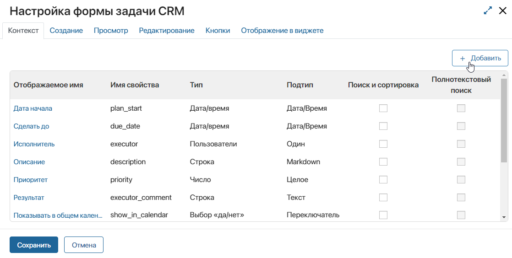
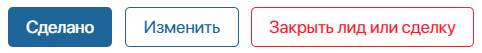
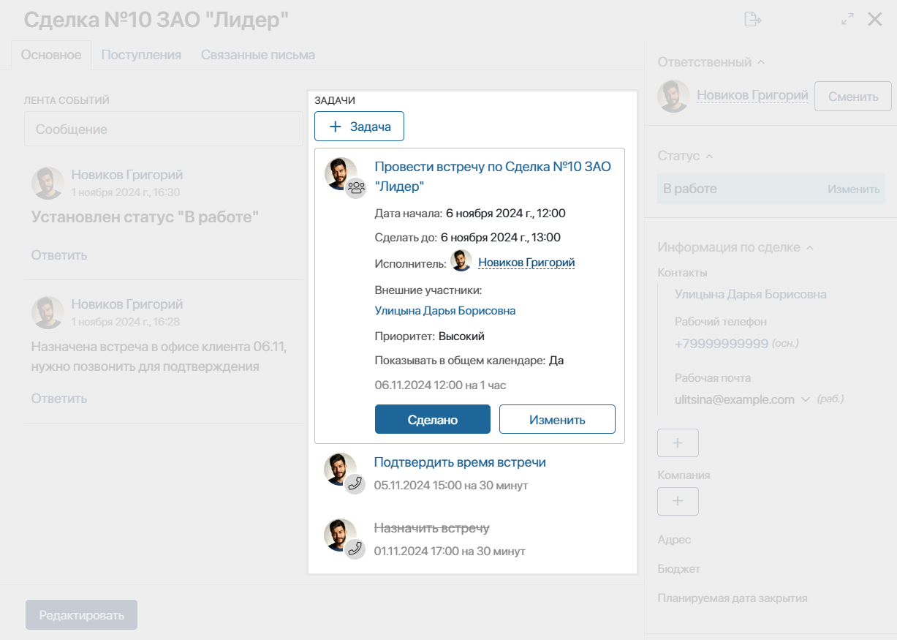
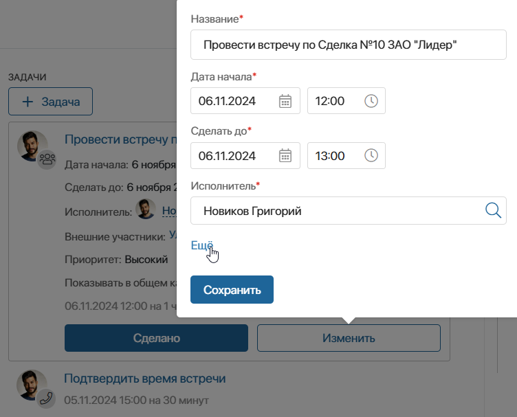

При назначении задачи CRM автор вводит информацию, необходимую менеджеру по продажам для выполнения работы. Эти данные отображается в карточке задачи.
Администратор системы может:
- изменить набор полей, которые отображаются при создании, просмотре и редактировании задачи CRM;
- настроить кнопки для редактирования и завершения задачи;
- указать, какие поля задачи отобразятся в карточке элемента, по которому она назначена. Это позволяет сотрудникам видеть основную информацию обо всех задачах, поставленных по элементу, не переходя в их карточки.
Настроить карточки можно для стандартных и пользовательских задач CRM. Для этого:
- Перейдите в раздел Администрирование > CRM > Типы задач CRM.
- Нажмите напротив нужного типа задач значок шестерёнки.
- На вкладке Основное в поле Форма нажмите Настроить.

В открывшемся окне настройка выполняется на вкладках Контекст, Создание, Просмотр, Редактирование, Кнопки и Отображение в виджете.
Контекст
На вкладке Контекст отображаются все свойства задачи CRM. Вы можете добавить новое свойство, чтобы отображать его при создании, просмотре или редактировании задачи. Для этого нажмите кнопку + Добавить и заполните поля.

Подробнее о том, как настраивать свойства, читайте в статье «Вкладка „Контекст“».
Создание
Задачу CRM можно создать двумя способами:
- Из раздела Задачи > Задачи CRM.
- С карточки элемента приложения с помощью виджета Связанные задачи.
На вкладке Создание можно:
- для создания задачи из раздела Задачи > Задачи CRM — полностью настроить карточку создания;
- для создания задачи из виджета — указать обязательность заполнения полей. Набор полей, которые отобразятся в виджете, настраивается на вкладке Отображение в виджете.
Карточка создания задачи CRM настраивается так же, как форма создания элемента приложения. Добавьте поля из столбца Контекст в столбец Название на форме и укажите, какие из них будут обязательны для заполнения.

Обратите внимание, при настройке карточки задачи CRM нельзя отметить поля доступными только для чтения. Также невозможно настроить создание элемента приложения при создании задачи по кнопке  . Например, при создании задачи CRM по лиду нельзя добавить в систему новый контакт и сразу указать его в поле.
. Например, при создании задачи CRM по лиду нельзя добавить в систему новый контакт и сразу указать его в поле.
Стандартные поля Дата начала, Сделать до и Исполнитель нельзя изменить или удалить.
Настройка шаблона формы в дизайнере интерфейсов для задач CRM не предусмотрена.
Чтобы применить настройки, нажмите в левом нижнем углу окна кнопку Сохранить, затем на странице настройки задачи CRM снова нажмите Сохранить.
Просмотр
Добавленные на этой вкладке поля отображаются, когда исполнитель или другой сотрудник открывает задачу CRM.
Настройка выполняется так же, как для карточки создания задачи CRM.
Обратите внимание, при просмотре задачи все поля недоступны для редактирования. Это значит, что пользователь не сможет внести в них данные при закрытии задачи. Если какое-то поле нужно заполнить, добавьте его при настройке кнопки с действием Сделано.
Редактирование
На вкладке Редактирование определите, какие поля отображаются, когда пользователь нажимает в карточке задачи кнопку Изменить. Настройка выполняется так же, как для карточки создания задачи.
Кнопки
На вкладке Кнопки можно управлять кнопками, которые исполнитель видит в карточке задачи CRM. По умолчанию для любой задачи добавлены кнопки Сделано — для завершения задачи — и Изменить — для её редактирования. В преднастроенных задачах CRM Звонок и Письмо добавлены дополнительные кнопки. Подробнее читайте в статье «Задачи CRM».
Вы можете отредактировать кнопку, нажав напротив неё значок шестерёнки, или удалить её, нажав значок корзины. Также можно добавить новую кнопку, нажав + Кнопка.
При создании или редактировании кнопки в окне настроек заполните поля:

- Действие — выберите, что будет происходить при нажатии кнопки:
- Сделано — откроется всплывающее окно для подтверждения закрытия задачи. В нём можно отобразить доступные для редактирования поля, например, чтобы пользователь мог указать комментарий в поле Результат. В блоке Обязательные поля укажите свойства, без заполнения которых закрыть задачу будет невозможно, в блоке Поля — те, которые необязательны для заполнения. Чтобы добавить поля, нажмите напротив них значок плюса, чтобы удалить — значок минуса;
- Изменить — откроется карточка редактирования задачи CRM, в которой пользователь сможет перенести сроки задачи, изменить исполнителя и т. д.;
- Закрыть и создать новую — пользователь должен выбрать причину, по которой задачу невозможно выполнить. Текущая задача CRM закроется. При этом пользователь сможет поставить новую задачу на другой период;
- Закрыть лид или сделку — кнопка отображается в карточке, только если задача назначена по лиду или сделке. Задача завершится, при этом статус связанного с ней лида сменится на Неквалифицирован, статус сделки — на Закрыта неуспешно. При закрытии пользователь указывает причину из списка. Причины можно задать в настройках воронки лидов или сделок;
- Отправить письмо — кнопка отображается в карточке, только если задача назначена по контакту с заполненным полем Рабочая почта, и у пользователя в разделе Почта подключён почтовый ящик. При нажатии кнопки открывается окно для написания письма, в котором адрес получателя заполняется автоматически. После отправки письма задача завершается;
- Запуск Бизнес-процесса — по элементу, связанному с задачей CRM, запускается бизнес-процесс. Нажмите Выберите процесс и укажите нужный вариант.
Процесс можно запускать по элементу любого приложения. Однако передавать в контекст процесса входные данные можно, только если задача ставится по сделке. Для этого в опции Связать с полем выберите контекстную переменную процесса, ссылающуюся на приложение Сделки. После этого можно настроить передачу в процесс данных из сделки, нажав Настроить входные параметры и сопоставив переменные процесса и свойства из контекста приложения.
- Текст внутри кнопки* — введите текст, отображаемый на кнопке;
- Цвет — выберите цвет кнопки.

Чтобы применить настройки, нажмите в левом нижнем углу окна кнопку Сохранить, затем на странице настройки задачи CRM снова нажмите Сохранить.
Отображение в виджете
Задачи CRM отображаются в карточках элементов приложений с помощью виджета Связанные задачи. Он по умолчанию добавлен в карточки лидов, сделок, компаний и контактов, а также на боковую панель всех других приложений системы.

С помощью виджета можно назначить новую задачу CRM, а также отредактировать существующую, не открывая её карточку.
При создании и редактировании задачи через виджет используется одинаковый набор полей, который вы определяете на вкладке Отображение в виджете. Добавьте поля в два блока:
- Расширенный список полей — поля, которые отображаются, когда пользователь раскрывает подробную информацию о задаче;

- Краткий список полей — основные поля, видимые всегда. Обратите внимание, эти поля также нужно добавить в расширенный список, чтобы они отображались при просмотре полной информации о задаче.
Обязательность заполнения полей при создании и изменении задачи CRM задаётся на вкладках Создание и Редактирование.
Чтобы применить настройки, нажмите в левом нижнем углу окна кнопку Сохранить, затем на странице настройки задачи CRM снова нажмите Сохранить.